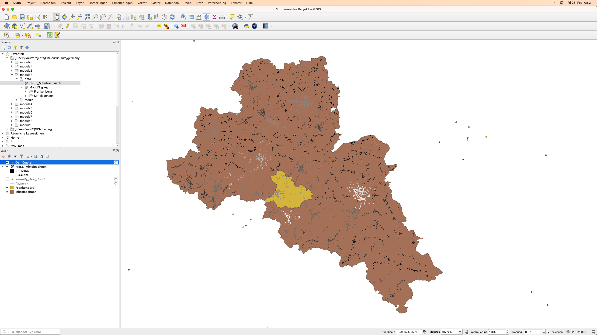

Modul 3 - OpenStreetMap und der High Resolution Settlement Layer
Autor:in: Ben Hur
Pädagogische Einführung
Dieses Modul führt in OpenStreetMap (OSM) und den High Resolution Settlement Layer (HRSL) ein. Am Ende dieses Moduls sollten die Lernenden vertraut sein mit:
- OpenStreetMap-Prinzipien
- OpenStreetMap-Daten und Anwendungsfällen
- High Resolution Settlement Layer Daten und Anwendungsfällen
Sie sollten außerdem in der Lage sein:
- OSM-Daten als Vektoren und Kacheln in QGIS zu laden
- das HRSL-Raster in QGIS zu laden
Technische Voraussetzungen
Die benötigten Werkzeuge und Ressourcen für dieses Modul sind:
- Computer
- Internetverbindung
- QGIS 3.16 auf dem Computer installiert (https://qgis.org/de/site/forusers/download.html)
- HRSL_Mittelsachsen.tif und Mittelsachsen.gpkg (in ./data/module3/).
Voraussetzungen
- Grundkenntnisse in der Bedienung eines Computers
- Vertrautheit mit räumlichen Datenformaten, der QGIS-Schnittstelle und dem Laden von Layern in QGIS (Abschluss der Module 0, 1 und 2)
Zusätzliche Ressourcen
- OpenStreetMap - https://www.openstreetmap.org/
- OpenStreetMap Wiki - https://wiki.openstreetmap.org/
- Overpass API Benutzerhandbuch - https://dev.overpass-api.de/overpass-doc/de/
- Facebook - High Resolution Settlement Layer - https://research.fb.com/downloads/high-resolution-settlement-layer-hrsl/
- CEISIN - High Resolution Settlement Layer - https://ciesin.columbia.edu/data/hrsl/
- HDX HRSL - https://data.humdata.org/search?organization=facebook&q=%22High%20Resolution%20Population%20Density%20Maps%20%2B%20Demographic%20Estimates%22
Thematische Einführung
Karten sind in unserem täglichen Leben allgegenwärtig geworden. Wir können einfach unser Telefon zücken und Anwendungen öffnen, die Karten und Standortdaten nutzen. Es gibt Apps, mit denen wir uns orientieren und lokalisieren können, mit denen wir navigieren und von einem Ort zum anderen gelangen. Karten werden angezeigt, wenn wir bei unserem Lieblingslieferdienst Essen bestellen, usw. Karten sind so sehr zu einem festen Bestandteil unserer täglichen Aktivitäten geworden, dass wir dazu neigen zu vergessen, dass es Orte auf der Welt gibt, die noch nicht kartiert sind oder nicht in den digitalen Karten, die wir verwenden, zu finden sind.
Aufschlüsselung der Konzepte
Die Allgegenwart von Karten in unserem Leben ist ein Nebenprodukt der schieren Menge an Orts- und Raumdaten, die wir sammeln. Die Möglichkeiten und das Potenzial, aus den uns zur Verfügung stehenden Geodaten etwas Gutes zu schaffen, sind hervorragend, aber dies wird nur möglich sein, wenn diese Geodatensätze frei und offen sind.
Hauptinhalt
Phase 1: OpenStreetMap (OSM)-Daten
Was ist OpenStreetMap (OSM)?
OpenStreetMap (OSM) (https://www.openstreetmap.org/) ist eine freie, editierbare Karte der ganzen Welt, die von Freiwilligen aus der ganzen Welt erstellt und mit einer Open-Content-Lizenz veröffentlicht wird. Es ist ein Projekt, das freie geografische Daten für die Welt erstellt und verteilt - eine Karte der Welt von den Menschen und für die Menschen. Wenn etwas in OSM fehlt, können Sie es gerne hinzufügen. Wenn etwas in OSM falsch ist, steht es Ihnen frei, es zu korrigieren. OSM ist ein digitales Allgemeingut, das den Wert der Informationen, die ihm hinzugefügt werden, stark steigert.

Abbildung 3.1. OpenStreetMap
Weitere Informationen darüber, warum OpenStreetMap existiert und wie wichtig es ist, finden Sie unter: https://wiki.openstreetmap.org/wiki/DE:FAQ#Warum_macht_Ihr_OpenStreetMap.3F) oder https://wiki.openstreetmap.org/wiki/DE:Über_OSM.
Laut OpenStreetMap handelt es sich um “offene Daten, die unter der Open Data Commons Open Database License (ODbL) (https://opendatacommons.org/licenses/odbl/) von der OpenStreetMap Foundation (OSMF) (https://osmfoundation.org/) lizenziert sind” und dass “Sie frei sind, unsere Daten zu kopieren, zu verteilen, zu übertragen und anzupassen, solange Sie OpenStreetMap und seine Mitwirkenden nennen. Wenn Sie unsere Daten verändern oder darauf aufbauen, dürfen Sie das Ergebnis nur unter der gleichen Lizenz weitergeben.” Wenn Sie eine Karte erstellen, die OSM-Daten verwendet, ist es erforderlich, dass Sie “© OpenStreetMap contributors” nennen. Sie können mehr über das Copyright und die Lizenz von OpenStreetMap hier lesen: https://www.openstreetmap.org/copyright
Wo wird OpenStreetMap verwendet?
Einer der Kernwerte von OpenStreetMap ist die Möglichkeit, Kartendaten zu sammeln, zu bearbeiten und zu teilen, die für viele verschiedene Zwecke verwendet werden können. Das ist die Freiheit, die die ObDL bietet. Da OpenStreetMap es den Nutzer:innen erlaubt, seine Daten mit sehr wenigen Einschränkungen zu verwenden, gibt es eine Vielzahl von Anwendungen, und Diensten, die auf OpenStreetMap aufgebaut sind, aufgebaut werden oder aufgebaut werden können. OpenStreetMap wird für die Erstellung von Karten, Routing-Dienste, Bildung und sogar für humanitäre und anwaltschaftliche Zwecke verwendet.
Außerdem gibt es mit HOT - dem Humanitarian OpenStreetMap Team - (https://www.hotosm.org/) ein internationales Team, das sich der humanitären Aktion und der Stärkung von Gemeinschaften durch Open Mapping widmet.
Die deutsche OpenStreetMap-Community ist eine der weltweit aktivsten. Je nach Region gibt es unterschiedliche Schwerpunktthmen. Die Berliner Community etwa setzt sich aktuell sehr aktiv mit dem Thema Verkehrswende auseinander. Gemeinsam erkunden die Mapper:innen, wie man die bestehenden Bestrebungen kartografieren und eine Datenbasis für kommende Entscheidungen schaffen kann. Mehr Informationen hierzu gibt es unter https://wiki.openstreetmap.org/wiki/Talk:Berlin/Verkehrswende
Eine Liste der OpenStreetMap-basierten Dienste finden Sie unter https://wiki.openstreetmap.org/wiki/DE:List_of_OSM-based_services.
Wie kann OpenStreetMap in QGIS verwendet werden?
OSM-Daten können in QGIS auf mehrere Arten verwendet werden. Die erste ist die Verwendung von OSM-abgeleiteten Kachel-Layern als Basiskarten. Tatsächlich wird QGIS standardmäßig mit einer Verbindung zu einem OpenStreetMap Tile Layer ausgeliefert. Sie finden diesen Layer mit dem Namen “OpenStreetMap” unter der Liste der XYZ-Kacheln im Bedienfeld des Browsers.
Sie können andere von OSM abgeleitete Kacheln in QGIS hinzufügen, wie z.B. die in der Leaflet Providers Liste (https://leaflet-extras.github.io/leaflet-providers/preview/). Von OSM abgeleitete Kacheln bieten dem/der Benutzer:in freien und offenen Zugang zu einer aktualisierten Basiskarte, da diese Kacheln in der Regel regelmäßig aktualisiert werden, um dem aktuellen Stand von OSM zu entsprechen.
Sie können die Features aus OSM auch als Vektordaten in QGIS laden. Dies kann durch Herunterladen von OSM-Daten von Seiten wie GEOFABRIK (https://www.geofabrik.de/data/download.html) geschehen.
OSM-Feature-Daten können auch direkt in QGIS geladen werden, indem das QuickOSM-Plugin verwendet wird. Dieses Plugin nutzt die Overpass-API (https://wiki.openstreetmap.org/wiki/DE:Overpass_API), die es ermöglicht, schnell eine Teilmenge der OSM-Daten durch Abfragen auszuwählen. Dies ist möglich, weil Features in OSM (https://wiki.openstreetmap.org/wiki/DE:Mapfeatures) mit einem freien Tagging-System (https://wiki.openstreetmap.org/wiki/DE:Tags) versehen werden, das es erlaubt, eine unbegrenzte Anzahl von Attributen in die Karte aufzunehmen, die jedes Feature beschreiben. Diese Tags können dann verwendet werden, um bestimmte Features auf der Grundlage ihrer Attribute/Tags abzufragen.
Normalerweise einigen sich die OSM-Community und lokale Communities auf bestimmte Schlüssel- und Wertekombinationen, die für die am häufigsten verwendeten Tags geeignet sind und als informeller Standard fungieren. Dadurch wird sichergestellt, dass die Datenbenutzer:innen Konsistenz bei der Kennzeichnung gemeinsamer Merkmale wie Straßen, Gebäude usw. erwarten können. Benutzer:innen können jedoch jederzeit neue Tags erstellen, um den Stil der Karte zu verbessern oder Analysen zu unterstützen, die sich auf zuvor nicht kartierte Attribute oder Tags der Merkmale stützen.
Übung 1: Laden von OSM-Daten in QGIS unter Verwendung des QuickOSM-Plugins
In dieser Übung werden wir Straßennetzdaten und Standorte von Fastfood-Ketten aus OSM laden, die Landkreis Mittelsachsen zu finden sind, indem wir das QuickOSM-Plugin verwenden.
QuickOSM funktioniert durch Abfrage der Tags (Schlüssel und Werte) der Daten in OSM. Weitere Informationen über die Verwendung der Schlüssel/Werte (tags/values) in QuickOSM finden Sie unter: https://wiki.openstreetmap.org/wiki/Mapfeatures.
- Laden Sie die Vektorlayer Mittelsachsen und Frankenberg aus dem Geopaket Modul3.

Abbildung 3.2. Mittelsachsen Layer in QGIS
- Stellen Sie sicher, dass das QuickOSM-Plugin installiert und aktiviert ist. Es sollte unter Vektor ‣ QuickOSM in der Menüleiste erscheinen. Falls nicht, installieren und aktivieren Sie das Plugin zunächst über den Dialog “Plugins verwalten und installieren”.
-
Öffnen Sie das QuickOSM-Plugin (Vektor ‣ QuickOSM ‣ QuickOSM). Es sollte sich ein Dialog mit fünf Registerkarten öffnen:
- Schnelle Abfrage
- Ermöglicht es, eine einfache Abfrage mit einer Schlüssel-Wert-Kombination zu erstellen und auszuführen, um eine Teilmenge der OSM-Feature-Daten zu laden.
- Abfrage
- Ermöglicht die Ausführung komplexer Abfragen unter Verwendung der Overpass-API.
- Enthält eine Verknüpfung zur Overpass Turbo-Webanwendung.
- OSM-Datei:
- Ermöglicht das Laden von Daten aus OSM-Rohdateien (z. B. .pbf).
- Parameter:
- Ermöglicht es, die zu verwendenden Overpass-API Instanz auszuwählen.
- Über:
- Zeigt Informationen über das Plugin an.
- Schnelle Abfrage

Abbildung 3.3. QuickOSM-Plugin
-
Laden Sie alle Straßen innerhalb der Ausdehnung des Layers Frankenberg.
- Schlüssel: highway
- Wert: leer lassen (das entspricht allen Werten)
- Layer-Ausdehnung: Frankenberg
- Erweitert:
- Way, Line, Multilinestrings anhaken

Abbildung 3.4. Alle Straßen im Layerausschnitt Frankenberg
- Klicken Sie auf Abfrage ausführen. Wir weisen QuickOSM an, alle Linien, die mit einem Highway-Schlüssel versehen sind, abzufragen und sie in QGIS zu laden. Wenn das Plugin mit dem Laden des Layers fertig ist, sollte Ihre Karte wie unten aussehen:

Abbildung 3.5. Geladene Straßendaten
- Beachten Sie, dass die von QuickOSM geladenen Layer temporäre Layer sind. Sie sollten sie als Dateien speichern oder persistent machen, wenn Sie sie später verwenden möchten.
- Wenn Sie die genaue Overpass Abfrage sehen möchten, die die “Schnelle Abfrage” für Sie erstellt hat, klicken Sie auf Show query (Abfrage anzeigen) und die Abfrage wird auf der Registerkarte Query geöffnet. Sie können Ihre Abfrage dann bearbeiten, um sie komplexer zu gestalten.

Abbildung 3.6. Die Overpass-Version der Schnellabfrage zum Laden von Straßen
-
Als Nächstes wollen wir alle Fast-Food-Restaurant-Standorte in Mittelsachsen laden. Öffnen Sie das QuickOSM-Plugin und geben Sie auf der Registerkarte Schnellabfrage die folgenden Parameter ein:
- Schlüssel: amenity
- Wert: fast_food
- Layer-Ausdehnung: Mittelsachsen
- Erweitert:
- Node, Way, Relation, Points anhaken

Abbildung 3.7: Als fast_food markierte Punkte in Mittelsachsen
- Die Ausgabe sollte in etwa wie folgt aussehen:

Abbildung 3.8: Fast-Food Standorte aus OSM
- Beachten Sie, dass auch Daten außerhalb des Landkreises geladen wurden. Das liegt daran, dass wir den Layerumfang als Begrenzungsrahmen verwenden. Wenn wir nur die Features innerhalb des Polygons benötigen, können wir diese Features auswählen oder ausschneiden. Wie das geht, wird in späteren Modulen besprochen.
Quizfragen
-
Richtig oder Falsch:
- Ein Feature in OpenStreetMap kann nur ein Tag oder Attribut haben. Falsch
- Sie können in OpenStreetMap nur Punkte hinzufügen. – Falsch (Sie können auch andere Features wie Linien und Polygone hinzufügen)
- OpenStreetMap kann nur als Online-Karte verwendet werden. – Falsch (Sie können auch die von OpenStreetMap erstellten Vektordaten herunterladen und verwenden, z. B. wenn Sie sie mit dem QuickOSM-Plugin verwenden)
Phase 2: Die Daten des High Resolution Settlement Layers (HRSL)
Was ist der High Resolution Settlement Layer (HRSL)?
Laut Facebook und dem Center for International Earth Science Information Network (CIESIN) an der Columbia University liefert der “High Resolution Settlement Layer (HRSL) Schätzungen der menschlichen Bevölkerungsverteilung mit einer Auflösung von 1 Bogensekunde (ca. 30m)”.
Bevölkerungsraster wurden für 140 Länder entwickelt und können über den Humanitarian Data Exchange (https://data.humdata.org/search?organization=facebook&q=%22High%20Resolution%20Population%20Density%20Maps%20%2B%20Demographic%20Estimates%22) abgerufen werden.
Die Bevölkerungsschätzungen beruhen auf Volkszählungsdaten und hochauflösenden (0,5) Satellitenbildern von DigitalGlobe. Siedlungen und von Menschen errichtete Strukturen werden in den Bildern durch Anwendung von Bilderkennungs-Techniken identifiziert. Diese Orte werden dann als Proxy für Orte verwendet, an denen Menschen leben. Anschließend verwendet CIESIN eine proportionale Zuordnung, um die Bevölkerungsdaten aus den Volkszählungsdaten auf die Siedlungsausdehnungen zu verteilen.
Für die aktuelle Iteration der HRSL sind sieben Karten/Datensätze für die Verteilung der verschiedenen Bevölkerungsgruppen verfügbar:
- Gesamtbevölkerungsdichte
- Frauen
- Männer
- Kinder (0-5 Jahre)
- Jugendliche (15-24 Jahre)
- Ältere Menschen (ab 60 Jahren)
- Frauen im reproduktiven Alter (15-49 Jahre)

Abbildung 3.9: HRSL-Daten auf dem HDX
Nutzungsfälle des HRSL
Die Bevölkerungsraster liefern hochauflösende und genaue Informationen sowohl über die Abgrenzung von Siedlungen in städtischen und ländlichen Gebieten als auch über die Anzahl der dort lebenden Menschen. Diese Informationen sind für viele Forschungsbereiche wie Katastrophenschutz und humanitäre Hilfe, Planung und Entwicklung von Infrastruktur nützlich.
Mehr Informationen zum HRSL finden sie in den folgenden englischsprachigen Quellen:
How to work with Facebook population density data - http://www.statsmapsnpix.com/2021/01/how-to-work-with-facebook-population.html
Open population and open challenges - https://engineering.fb.com/2016/11/15/core-data/open-population-datasets-and-open-challenges/
Connecting the world with better maps - https://engineering.fb.com/2016/02/21/core-data/connecting-the-world-with-better-maps/
Mapping the world population one building at a time - https://arxiv.org/abs/1712.05839
Übung 2: Laden der HRSL-Daten in QGIS
Die HRSL-Daten auf HDX liegen im GeoTIFF- (Raster) und CSV-Format (Vektor) vor. Die CSV sind Punktstandorte mit entsprechenden Bevölkerungswerten. Für diese Übung wurde bereits eine Teilmenge der Daten für Ihr Land vorbereitet, aber Sie können jederzeit den gesamten Datensatz oder auch andere Datensätze zum Ausprobieren herunterladen.
- Laden Sie die Rasterdatei HRSL_Mittelsachsen in QGIS.

Abbildung 3.10: Der HRSL für Mittelsachsen
- Prüfen Sie die Eigenschaften des Layers.
- Sie können auch die Symbologie und den Stil des Rasters bearbeiten (wird in einem späteren Modul behandelt)
Quizfragen
- Welche Datensätze wurden verwendet, um die Lage der Siedlungen zu ermitteln und die Bevölkerung diesen Siedlungen zuzuordnen?
- Wie hat die HRSL die Standorte der Siedlungen ermittelt?
- Wie wurde die Bevölkerung in einem Gebiet den Siedlungen zugewiesen?
Wenn Sie Lust auf mehr haben:
Benutzen Sie die Overpass API, um eine Abfrage an OSM zu erstellen
Die Overpass API (https://wiki.openstreetmap.org/wiki/DE:Overpass_API), früher bekannt als OSM Server Side Scripting oder OSM3S vor 2011, ist eine schreibgeschützte API, die benutzerdefinierte ausgewählte Teile der OSM-Kartendaten bereitstellt. Im Gegensatz zur Haupt-API, die für die Bearbeitung optimiert ist, ist die Overpass-API für Datenkonsument:innen optimiert, um eine kleine Teilmenge der etwa 10 Millionen Elemente in OpenStreetMap abzufragen. Diese Teilmengen können nach Suchkriterien wie Standort, Art der Objekte, Tag-Eigenschaften, Nähe oder Kombinationen davon ausgewählt werden. Die Overpass-API dient als Backend für andere OSM-basierte Dienste wie das QuickOSM-Plugin.
Die Verwendung einer Overpass-Abfrage ermöglicht es Ihnen, eine komplexere Feature-Auswahl in QuickOSM zu erstellen. Lassen Sie uns zum Beispiel wieder alle Fast Foods innerhalb der Ausdehnung von Mittelsachsen laden, aber dieses Mal nur die Filialen von McDonald’s. Wenn Sie sich die Attributtabelle des Layers “Fast Food” ansehen, werden Sie feststellen, dass sie ein Feld name hat. Die Felder in der Attributtabelle der von OSM geladenen Daten entsprechen den Tag-Schlüsseln. Wenn wir also nur alle McDonald’s-Filialen auswählen wollen, müssen wir einen Filter hinzufügen, der ein Feature auswählt, wenn es für den Schlüssel Name den Wert McDonald’s hat. Dieser Filter kann einfach in einer Overpass-API hinzugefügt werden.
- Öffnen Sie das QuickOSM-Plugin und geben Sie die Parameter ein, die wir für die Abfrage aller Fast Foods verwendet haben.

Schnellabfrage zum Laden aller als Fast Food gekennzeichneten Einrichtungen
- Klicken Sie auf Abfrage anzeigen.

Overapss-Version der Abfrage
- Bearbeiten Sie die Abfrage und fügen Sie die Zeile
<has-kv k="name" v="McDonald's"/>nach jeder` Zeile ein.

Overpass-Abfrage, um nur Fastfood-Filialen mit dem Namen McDonald’s
- Klicken Sie auf Run query. Dies sollte nur die als fast_food gekennzeichneten Punkte mit dem Namen McDonald’s laden. Der Layer-Name lautet OsmQuery.

McDonald’s Filialen aus OSM
- Probieren Sie es auch mit anderen Fast-Food-Ketten aus.
Sie können auch Overpass-Abfragen in Overpass turbo (https://wiki.openstreetmap.org/wiki/Overpass_turbo), einem webbasierten Data-Mining-Tool für OpenStreetMap, testen und erstellen.
Um Ihre neuen Fähigkeiten auszuprobieren, versuchen Sie…
Laden Sie weitere Funktionen aus OSM mit dem QuickOSM-Plugin
- Versuchen Sie, mit dem QuickOSM-Plugin weitere Features (Punkte, Linien, Polygone) wie Krankenhäuser, Schulen etc. zu laden.
Tipps
Wenn Sie das gewünschte oder benötigte Feature nicht auf OpenStreetMap finden, können Sie jederzeit Features auf der Karte selbst hinzufügen oder bearbeiten. Melden Sie sich unter https://www.openstreetmap.org/ an und fangen Sie an, etwas beizutragen!